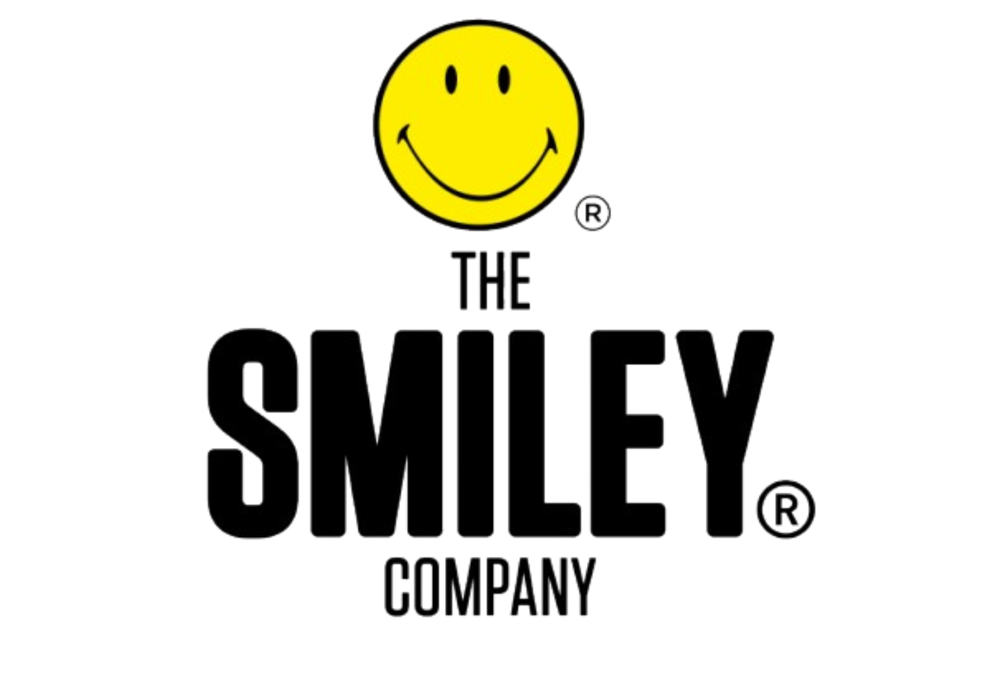
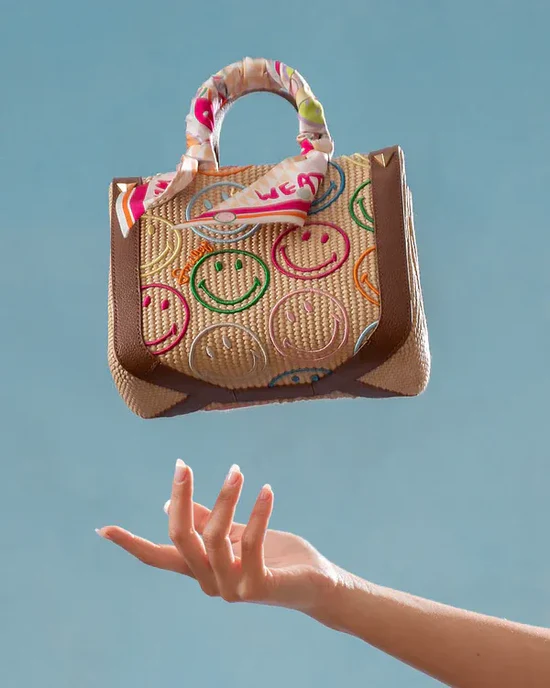

| Головна | Смайлик | Каомодзі | Емодзі | Стилі смайликів |
The Smiley Company — міжнародна компанія з ліцензування брендів, що базується у Лондоні (Великобританія) і володіє правами на використання символу смайлика в понад 100 країнах світу.

Історія компанії почалася ще в 1971 році, коли французький журналіст Френклін Луфрані зареєстрував свій варіант символу «смайлик» як торгову марку у Франції. Саме він уперше комерційно використав цей символ, розповсюджуючи позитивні повідомлення та наклейки з усміхненим обличчям, щоб підняти настрій людям. У 1996 році Френклін і його син Ніколас Луфрані офіційно заснували The Smiley Company у Лондоні та розвинули бренд у глобальний бізнес з ліцензування.

The Smiley Company ліцензує смайлик і пов’язані з ним зображення для широкого спектру товарів:Це робить її однією з найвпливовіших компаній у світі ліцензування брендів.
Компанія пропагує ідею оптимізму, радості та позитивного мислення, а також підтримує соціальні ініціативи, спрямовані на поширення щастя у повсякденному житті.